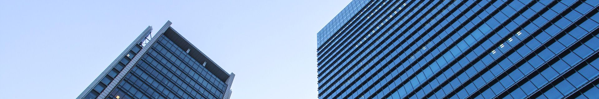

资讯中心
- VIA 57 West公寓赢得2016国际高层建筑奖
- 2018-01-18 15:42:00 阅读量：6
-
在京津冀城市群协同发展语境下，这座河北小镇，正深刻展现着大都市圈，乃至城市化建设的变革与探索。
近年来，随着京津冀一体化的不断推进，特别是在北京的城市副中心定点通州后，北京的非首都职能正逐步从城六区向“新中心”转
移。
事实上，从惯例和标准来看，燕郊应当属于北京都市圈的通勤范围以内。
根据中国工程院城市群交通一体化研究课题组定义，都市圈是一个占明显优势的核心城市为中心，以通勤范围维空间区域，由若干城
镇组成的具有综合功能社会实体。
清华大学交通研究所所长、教授陆化普认为，都市圈是居民生活的一日通勤圈、生活圈和日常活动圈，是有边界的。出行一小时点到
点的通勤服务，应该是界定都市圈规模的指标。而城市群，则是相互之间上下游产业密切关联，需要便捷货运通道满足产业物流需求
的生产协作圈，包括都市圈和多个综合功能的城市，没有边界限制。
他指出，都市圈土地开发，最关键的促进土地混合使用，要满足居民的居住需求、生活配套、就业岗位和公共服务。要实现交通与土
地利用的一体化，推进生态城市单元建设和混合土地使用。其中，推交通与土地利用的优化调整，有利于减少末端时间消耗，满足都
市圈的高频次、大规模通勤需求。
在上述种种原因共同作用下，最终出现了三河市规划中，2016年燕郊住宅用地零供给。